One development data world/source initialization unit: an engineering and exploratory experiment without confirmatory significance or equivalence claims. Four tasks × two encodings × two architectures = 16 models, all retained. Transformer: width 256, 4 layers, 8 heads, 3,240,448 parameters; GRU: width 256, 4 layers, 1,660,416 parameters, with unmatched capacity. Encodings copy exact initialization within architecture; weights differ across architectures.
Engineering completion status:passed. Fixed 20,000 updates, identical underlying permutations and batches, and identical answer+EOS supervision; no best-checkpoint selection or scaling/extensions for weak tasks. Source-task mastery affects geometry, so differences cannot be directly attributed to architecture alone.
Each metric displays initialization preference B₀, trained preference Bₜ, correct-pair change δc, wrong-pair change δw, and Δ separately. Δ = Bₜ − B₀ = δc − δw. Encoding interactions are cycle minus one-line, ΓΔ = Γₜ − Γ₀.
A sign change in Δ across encodings alone is not a reversal of learned relation preference.If Bₜ is similar while B₀ differs, the change concerns training increments relative to initialization. Correct-pair improvements and wrong-pair declines are reported separately. Hidden minus output metrics do not identify an additional mechanism.
Lengths 10–30 are computed separately with fixed 1/21 aggregation; undefined lengths are retained without aggregate reweighting. Neighborhood k=10; Procrustes is fitted on orbit-disjoint validation inputs and evaluated on test inputs, showing negative prediction error. Debiased CKA is a sensitivity analysis. Answer stratification does not remove all confidence/output information.
| run_id | parameters | initial_validation_accuracy | final_validation_accuracy | gain | learning_gate_passed |
|---|---|---|---|---|---|
| archdev001_transformer_one_line_descents | 3240448 | 0.00000 | 0.99051 | 0.99051 | True |
| archdev001_transformer_one_line_recoils | 3240448 | 0.00000 | 0.72284 | 0.72284 | True |
| archdev001_transformer_one_line_peaks | 3240448 | 0.00242 | 0.85435 | 0.85193 | True |
| archdev001_transformer_one_line_valleys | 3240448 | 0.00521 | 0.91462 | 0.90941 | True |
| archdev001_transformer_canonical_cycle_descents | 3240448 | 0.00000 | 0.31045 | 0.31045 | True |
| archdev001_transformer_canonical_cycle_recoils | 3240448 | 0.00000 | 0.31250 | 0.31250 | True |
| archdev001_transformer_canonical_cycle_peaks | 3240448 | 0.00000 | 0.40830 | 0.40830 | True |
| archdev001_transformer_canonical_cycle_valleys | 3240448 | 0.00000 | 0.40495 | 0.40495 | True |
| archdev001_gru_one_line_descents | 1660416 | 0.00000 | 0.99981 | 0.99981 | True |
| archdev001_gru_one_line_recoils | 1660416 | 0.00000 | 0.38802 | 0.38802 | True |
| archdev001_gru_one_line_peaks | 1660416 | 0.00205 | 1.00000 | 0.99795 | True |
| archdev001_gru_one_line_valleys | 1660416 | 0.00335 | 0.99963 | 0.99628 | True |
| archdev001_gru_canonical_cycle_descents | 1660416 | 0.00000 | 0.31436 | 0.31436 | True |
| archdev001_gru_canonical_cycle_recoils | 1660416 | 0.00000 | 0.30060 | 0.30060 | True |
| archdev001_gru_canonical_cycle_peaks | 1660416 | 0.00205 | 0.41685 | 0.41481 | True |
| archdev001_gru_canonical_cycle_valleys | 1660416 | 0.00335 | 0.41220 | 0.40885 | True |
Improving at least 10 percentage points over genuine initialization is only an engineering learning gate.This does not guarantee learning permutation content or support a strong architectural conclusion. The added length-mode diagnostic is a descriptive supplement after protocol freezing: each task/length mode uses training labels only, resolves ties to the smallest label, then scores all test actions and models; primary metrics, gates, samples, and budgets are unchanged.
| architecture | encoding | task | condition | action | full_vocab_accuracy | numeric_accuracy | length_majority_accuracy | full_vocab_gain_over_length_majority_pp | numeric_gain_over_length_majority_pp |
|---|---|---|---|---|---|---|---|---|---|
| transformer | one_line | descents | initial | identity | 0.00000 | 0.10370 | 0.30441 | -30.44085 | -20.07068 |
| transformer | one_line | descents | initial | complement | 0.00000 | 0.10621 | 0.30134 | -30.13393 | -19.51265 |
| transformer | one_line | descents | initial | inverse | 0.00009 | 0.10575 | 0.29529 | -29.52009 | -18.95461 |
| transformer | one_line | descents | trained | identity | 0.99209 | 0.99209 | 0.30441 | 68.76860 | 68.76860 |
| transformer | one_line | descents | trained | complement | 0.98958 | 0.98958 | 0.30134 | 68.82440 | 68.82440 |
| transformer | one_line | descents | trained | inverse | 0.99033 | 0.99033 | 0.29529 | 69.50335 | 69.50335 |
| transformer | one_line | recoils | initial | identity | 0.00000 | 0.10379 | 0.29697 | -29.69680 | -19.31734 |
| transformer | one_line | recoils | initial | complement | 0.00000 | 0.09887 | 0.29697 | -29.69680 | -19.81027 |
| transformer | one_line | recoils | initial | inverse | 0.00009 | 0.10147 | 0.30190 | -30.18043 | -20.04278 |
| transformer | one_line | recoils | trained | identity | 0.72749 | 0.72749 | 0.29697 | 43.05246 | 43.05246 |
| transformer | one_line | recoils | trained | complement | 0.72024 | 0.72024 | 0.29697 | 42.32701 | 42.32701 |
| transformer | one_line | recoils | trained | inverse | 0.72889 | 0.72898 | 0.30190 | 42.69903 | 42.70833 |
| transformer | one_line | peaks | initial | identity | 0.00242 | 0.17699 | 0.39816 | -39.57403 | -22.11682 |
| transformer | one_line | peaks | initial | complement | 0.00298 | 0.17467 | 0.39314 | -39.01600 | -21.84710 |
| transformer | one_line | peaks | initial | inverse | 0.00233 | 0.17680 | 0.40132 | -39.89955 | -22.45164 |
| transformer | one_line | peaks | trained | identity | 0.85435 | 0.85435 | 0.39816 | 45.61942 | 45.61942 |
| transformer | one_line | peaks | trained | complement | 0.85826 | 0.85826 | 0.39314 | 46.51228 | 46.51228 |
| transformer | one_line | peaks | trained | inverse | 0.85472 | 0.85472 | 0.40132 | 45.34040 | 45.34040 |
| transformer | one_line | valleys | initial | identity | 0.00484 | 0.17680 | 0.39314 | -38.82999 | -21.63318 |
| transformer | one_line | valleys | initial | complement | 0.00595 | 0.17727 | 0.39816 | -39.22061 | -22.08891 |
| transformer | one_line | valleys | initial | inverse | 0.00493 | 0.17987 | 0.40848 | -40.35528 | -22.86086 |
| transformer | one_line | valleys | trained | identity | 0.91815 | 0.91815 | 0.39314 | 52.50186 | 52.50186 |
| transformer | one_line | valleys | trained | complement | 0.91797 | 0.91797 | 0.39816 | 51.98103 | 51.98103 |
| transformer | one_line | valleys | trained | inverse | 0.91648 | 0.91648 | 0.40848 | 50.79985 | 50.79985 |
| transformer | canonical_cycle | descents | initial | identity | 0.00000 | 0.07292 | 0.30441 | -30.44085 | -23.14918 |
| transformer | canonical_cycle | descents | initial | complement | 0.00000 | 0.07264 | 0.30134 | -30.13393 | -22.87016 |
| transformer | canonical_cycle | descents | initial | inverse | 0.00000 | 0.07385 | 0.29529 | -29.52939 | -22.14472 |
| transformer | canonical_cycle | descents | trained | identity | 0.31882 | 0.31882 | 0.30441 | 1.44159 | 1.44159 |
| transformer | canonical_cycle | descents | trained | complement | 0.32059 | 0.32059 | 0.30134 | 1.92522 | 1.92522 |
| transformer | canonical_cycle | descents | trained | inverse | 0.31585 | 0.31585 | 0.29529 | 2.05543 | 2.05543 |
| transformer | canonical_cycle | recoils | initial | identity | 0.00000 | 0.07041 | 0.29697 | -29.69680 | -22.65625 |
| transformer | canonical_cycle | recoils | initial | complement | 0.00000 | 0.06836 | 0.29697 | -29.69680 | -22.86086 |
| transformer | canonical_cycle | recoils | initial | inverse | 0.00000 | 0.06715 | 0.30190 | -30.18973 | -23.47470 |
| transformer | canonical_cycle | recoils | trained | identity | 0.30645 | 0.30645 | 0.29697 | 0.94866 | 0.94866 |
| transformer | canonical_cycle | recoils | trained | complement | 0.30897 | 0.30897 | 0.29697 | 1.19978 | 1.19978 |
| transformer | canonical_cycle | recoils | trained | inverse | 0.31380 | 0.31380 | 0.30190 | 1.19048 | 1.19048 |
| transformer | canonical_cycle | peaks | initial | identity | 0.00000 | 0.16285 | 0.39816 | -39.81585 | -23.53051 |
| transformer | canonical_cycle | peaks | initial | complement | 0.00000 | 0.16490 | 0.39314 | -39.31362 | -22.82366 |
| transformer | canonical_cycle | peaks | initial | inverse | 0.00000 | 0.16462 | 0.40132 | -40.13207 | -23.67001 |
| transformer | canonical_cycle | peaks | trained | identity | 0.40086 | 0.40086 | 0.39816 | 0.26972 | 0.26972 |
| transformer | canonical_cycle | peaks | trained | complement | 0.40179 | 0.40179 | 0.39314 | 0.86496 | 0.86496 |
| transformer | canonical_cycle | peaks | trained | inverse | 0.40858 | 0.40858 | 0.40132 | 0.72545 | 0.72545 |
| transformer | canonical_cycle | valleys | initial | identity | 0.00009 | 0.16406 | 0.39314 | -39.30432 | -22.90737 |
| transformer | canonical_cycle | valleys | initial | complement | 0.00000 | 0.16202 | 0.39816 | -39.81585 | -23.61421 |
| transformer | canonical_cycle | valleys | initial | inverse | 0.00000 | 0.16815 | 0.40848 | -40.84821 | -24.03274 |
| transformer | canonical_cycle | valleys | trained | identity | 0.39788 | 0.39788 | 0.39314 | 0.47433 | 0.47433 |
| transformer | canonical_cycle | valleys | trained | complement | 0.40113 | 0.40113 | 0.39816 | 0.29762 | 0.29762 |
| transformer | canonical_cycle | valleys | trained | inverse | 0.41230 | 0.41230 | 0.40848 | 0.38132 | 0.38132 |
| gru | one_line | descents | initial | identity | 0.00009 | 0.00009 | 0.30441 | -30.43155 | -30.43155 |
| gru | one_line | descents | initial | complement | 0.00009 | 0.00009 | 0.30134 | -30.12463 | -30.12463 |
| gru | one_line | descents | initial | inverse | 0.00000 | 0.00000 | 0.29529 | -29.52939 | -29.52939 |
| gru | one_line | descents | trained | identity | 0.99981 | 0.99981 | 0.30441 | 69.54055 | 69.54055 |
| gru | one_line | descents | trained | complement | 0.99981 | 0.99981 | 0.30134 | 69.84747 | 69.84747 |
| gru | one_line | descents | trained | inverse | 0.99991 | 0.99991 | 0.29529 | 70.46131 | 70.46131 |
| gru | one_line | recoils | initial | identity | 0.00000 | 0.00000 | 0.29697 | -29.69680 | -29.69680 |
| gru | one_line | recoils | initial | complement | 0.00009 | 0.00009 | 0.29697 | -29.68750 | -29.68750 |
| gru | one_line | recoils | initial | inverse | 0.00009 | 0.00009 | 0.30190 | -30.18043 | -30.18043 |
| gru | one_line | recoils | trained | identity | 0.39472 | 0.39472 | 0.29697 | 9.77493 | 9.77493 |
| gru | one_line | recoils | trained | complement | 0.38597 | 0.38597 | 0.29697 | 8.90067 | 8.90067 |
| gru | one_line | recoils | trained | inverse | 0.39555 | 0.39555 | 0.30190 | 9.36570 | 9.36570 |
| gru | one_line | peaks | initial | identity | 0.00353 | 0.00353 | 0.39816 | -39.46243 | -39.46243 |
| gru | one_line | peaks | initial | complement | 0.00326 | 0.00326 | 0.39314 | -38.98810 | -38.98810 |
| gru | one_line | peaks | initial | inverse | 0.00242 | 0.00242 | 0.40132 | -39.89025 | -39.89025 |
| gru | one_line | peaks | trained | identity | 1.00000 | 1.00000 | 0.39816 | 60.18415 | 60.18415 |
| gru | one_line | peaks | trained | complement | 1.00000 | 1.00000 | 0.39314 | 60.68638 | 60.68638 |
| gru | one_line | peaks | trained | inverse | 1.00000 | 1.00000 | 0.40132 | 59.86793 | 59.86793 |
| gru | one_line | valleys | initial | identity | 0.00326 | 0.00326 | 0.39314 | -38.98810 | -38.98810 |
| gru | one_line | valleys | initial | complement | 0.00353 | 0.00353 | 0.39816 | -39.46243 | -39.46243 |
| gru | one_line | valleys | initial | inverse | 0.00242 | 0.00242 | 0.40848 | -40.60640 | -40.60640 |
| gru | one_line | valleys | trained | identity | 0.99991 | 0.99991 | 0.39314 | 60.67708 | 60.67708 |
| gru | one_line | valleys | trained | complement | 1.00000 | 1.00000 | 0.39816 | 60.18415 | 60.18415 |
| gru | one_line | valleys | trained | inverse | 0.99981 | 0.99981 | 0.40848 | 59.13318 | 59.13318 |
| gru | canonical_cycle | descents | initial | identity | 0.00009 | 0.00009 | 0.30441 | -30.43155 | -30.43155 |
| gru | canonical_cycle | descents | initial | complement | 0.00009 | 0.00009 | 0.30134 | -30.12463 | -30.12463 |
| gru | canonical_cycle | descents | initial | inverse | 0.00000 | 0.00000 | 0.29529 | -29.52939 | -29.52939 |
| gru | canonical_cycle | descents | trained | identity | 0.31920 | 0.31920 | 0.30441 | 1.47879 | 1.47879 |
| gru | canonical_cycle | descents | trained | complement | 0.32059 | 0.32059 | 0.30134 | 1.92522 | 1.92522 |
| gru | canonical_cycle | descents | trained | inverse | 0.31241 | 0.31241 | 0.29529 | 1.71131 | 1.71131 |
| gru | canonical_cycle | recoils | initial | identity | 0.00000 | 0.00000 | 0.29697 | -29.69680 | -29.69680 |
| gru | canonical_cycle | recoils | initial | complement | 0.00009 | 0.00009 | 0.29697 | -29.68750 | -29.68750 |
| gru | canonical_cycle | recoils | initial | inverse | 0.00009 | 0.00009 | 0.30190 | -30.18043 | -30.18043 |
| gru | canonical_cycle | recoils | trained | identity | 0.30069 | 0.30069 | 0.29697 | 0.37202 | 0.37202 |
| gru | canonical_cycle | recoils | trained | complement | 0.30180 | 0.30180 | 0.29697 | 0.48363 | 0.48363 |
| gru | canonical_cycle | recoils | trained | inverse | 0.30906 | 0.30906 | 0.30190 | 0.71615 | 0.71615 |
| gru | canonical_cycle | peaks | initial | identity | 0.00353 | 0.00353 | 0.39816 | -39.46243 | -39.46243 |
| gru | canonical_cycle | peaks | initial | complement | 0.00326 | 0.00326 | 0.39314 | -38.98810 | -38.98810 |
| gru | canonical_cycle | peaks | initial | inverse | 0.00242 | 0.00242 | 0.40132 | -39.89025 | -39.89025 |
| gru | canonical_cycle | peaks | trained | identity | 0.40690 | 0.40690 | 0.39816 | 0.87426 | 0.87426 |
| gru | canonical_cycle | peaks | trained | complement | 0.40458 | 0.40458 | 0.39314 | 1.14397 | 1.14397 |
| gru | canonical_cycle | peaks | trained | inverse | 0.41267 | 0.41267 | 0.40132 | 1.13467 | 1.13467 |
| gru | canonical_cycle | valleys | initial | identity | 0.00326 | 0.00326 | 0.39314 | -38.98810 | -38.98810 |
| gru | canonical_cycle | valleys | initial | complement | 0.00353 | 0.00353 | 0.39816 | -39.46243 | -39.46243 |
| gru | canonical_cycle | valleys | initial | inverse | 0.00242 | 0.00242 | 0.40848 | -40.60640 | -40.60640 |
| gru | canonical_cycle | valleys | trained | identity | 0.41090 | 0.41090 | 0.39314 | 1.77641 | 1.77641 |
| gru | canonical_cycle | valleys | trained | complement | 0.41248 | 0.41248 | 0.39816 | 1.43229 | 1.43229 |
| gru | canonical_cycle | valleys | trained | inverse | 0.42764 | 0.42764 | 0.40848 | 1.91592 | 1.91592 |
Exceeding this baseline means this particular length-only predictor cannot reproduce the performance; falling below it does not mean no permutation content is used. Complete per-length differences and train/test label counts can be independently recomputed; seeModel-by-length table, Label countsandSupplementary-analysis note.
The historical development NPZ contains three prefixed permutation arrays previously skipped by the generic reader. The repair explicitly excludes 102,144 historical development orbits and 817,152 members; historical/new orbit overlap is 0, with regeneration retaining the fixed data seed. Earlier data and audits are retained as snapshots; no source training used the wrong data.
Internal dropout state in the original multilayer cuDNN GRU cannot be restored via ordinary RNG checkpoints; an independent CUDA toy check found this. Four single-layer GRUs and three explicit Dropout(0.1) modules passed CUDA restoration checks. Original initialization is migrated tensor by tensor with matching canonical-coordinate hashes and passing hidden-state/logit checks; migration is labeled a no-training rename of genuine original initialization, not a new constructor initialization. Transformer and data remain unchanged.
Final real-data audits include a continuous single-process 0→2000 reference versus independent-process 1000→2000 restoration, finite gradients and learning gates for every source, prefix-only handwritten forwards versus initial/trained saved activations, suffix causality, and independent covariance-CKA verification. Specific statuses and values follow; failures are not described as passes.
{
"status": "passed",
"formal_training_started": false
}Complete original JSON{
"status": "passed"
}Complete original JSON{
"status": "passed",
"execution_source_version_sha256": "d8fc9e153e45c15f2ad82997fdf34bf4988c92f0fa6a78afdc70aa454d8bdc3a"
}Complete original JSON{
"status": "passed",
"execution_source_version_sha256": "d8fc9e153e45c15f2ad82997fdf34bf4988c92f0fa6a78afdc70aa454d8bdc3a",
"activation_vectors_checked": 2304,
"max_saved_activation_difference": 5.155801773071289e-06,
"max_prefix_suffix_causal_difference": 2.7120113372802734e-06,
"max_cka_covariance_difference": 4.440892098500626e-15
}Complete original JSON{
"status": "passed",
"source_version_sha256": "6cfb4f873fbc856bac1c07b6a6e802ac55388af9d92ee60c04ee6e4f7dc5c6b8",
"source_optimizer_updates": 0,
"prior_orbits": 102144,
"new_orbits": 102144,
"prior_new_orbit_intersection": 0,
"prior_development_orbit_members_appended": 817152
}Complete original JSON{
"status": "passed",
"formal_training_started": false
}Complete original JSON{
"status": "passed",
"models": 16,
"formal_training_started": false,
"gates": {
"cpu_check.json": "passed",
"overfit_summary.json": "passed",
"resume_summary.json": "passed",
"independent_evaluation.json": "passed"
}
}Complete original JSON{
"source_optimizer_updates": 0,
"all_corresponding_tensors_bitwise_equal": true,
"canonical_coordinate_sha256": "5a766f8777a47de8332fbd958b6292e5fc38899a30b883870ba329f7605ad18c"
}Complete original JSON{
"source_version_sha256": "d8fc9e153e45c15f2ad82997fdf34bf4988c92f0fa6a78afdc70aa454d8bdc3a"
}Complete original JSON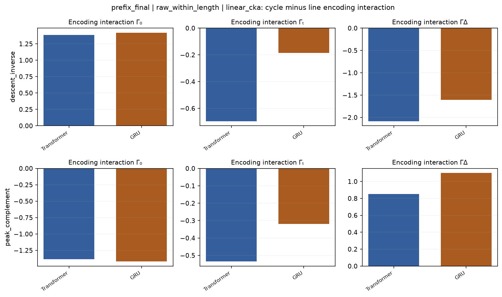
| architecture | encoding | relation | B0 | Bt | change_correct | change_wrong | Delta | undefined_lengths |
|---|---|---|---|---|---|---|---|---|
| transformer | one_line | descent_inverse | -0.60257 | 0.65927 | 0.64643 | -0.61542 | 1.26185 | 0 |
| transformer | canonical_cycle | descent_inverse | 0.78448 | -0.03637 | -0.75649 | 0.06436 | -0.82085 | 0 |
| gru | one_line | descent_inverse | -0.61854 | 0.26016 | 0.22818 | -0.65052 | 0.87870 | 0 |
| gru | canonical_cycle | descent_inverse | 0.80014 | 0.07393 | -0.70728 | 0.01893 | -0.72621 | 0 |
| transformer | one_line | peak_complement | 0.60257 | 0.62559 | -0.03757 | -0.06059 | 0.02302 | 0 |
| transformer | canonical_cycle | peak_complement | -0.78448 | 0.09101 | 0.07514 | -0.80035 | 0.87549 | 0 |
| gru | one_line | peak_complement | 0.61854 | 0.97321 | 0.28583 | -0.06884 | 0.35466 | 0 |
| gru | canonical_cycle | peak_complement | -0.80014 | 0.65404 | 0.64822 | -0.80596 | 1.45418 | 0 |
| architecture | relation | Gamma0 | Gammat | Gamma_correct | Gamma_wrong | GammaDelta |
|---|---|---|---|---|---|---|
| transformer | descent_inverse | 1.38706 | -0.69565 | -1.40292 | 0.67978 | -2.08270 |
| gru | descent_inverse | 1.41868 | -0.18623 | -0.93546 | 0.66945 | -1.60491 |
| transformer | peak_complement | -1.38706 | -0.53458 | 0.11271 | -0.73976 | 0.85247 |
| gru | peak_complement | -1.41868 | -0.31917 | 0.36239 | -0.73712 | 1.09952 |
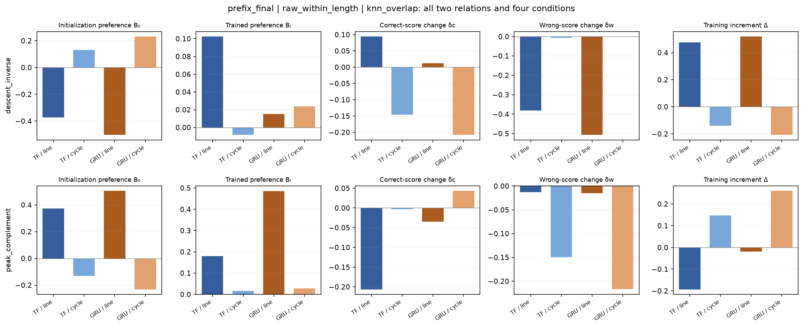
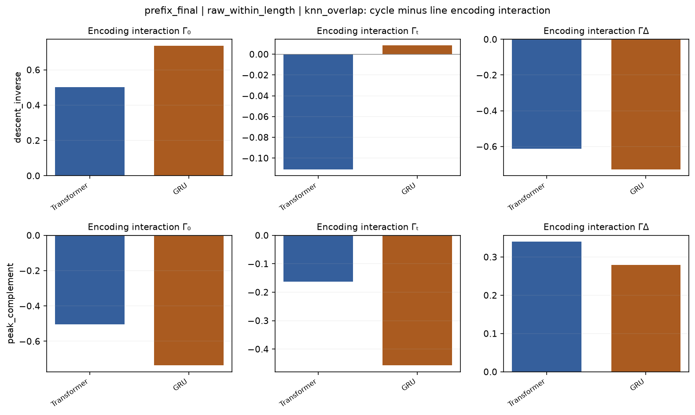
| architecture | encoding | relation | B0 | Bt | change_correct | change_wrong | Delta | undefined_lengths |
|---|---|---|---|---|---|---|---|---|
| transformer | one_line | descent_inverse | -0.37236 | 0.10255 | 0.09423 | -0.38067 | 0.47491 | 0 |
| transformer | canonical_cycle | descent_inverse | 0.13078 | -0.00853 | -0.14620 | -0.00689 | -0.13930 | 0 |
| gru | one_line | descent_inverse | -0.50426 | 0.01523 | 0.01220 | -0.50729 | 0.51949 | 0 |
| gru | canonical_cycle | descent_inverse | 0.23198 | 0.02363 | -0.20820 | 0.00015 | -0.20835 | 0 |
| transformer | one_line | peak_complement | 0.37236 | 0.17904 | -0.20659 | -0.01327 | -0.19332 | 0 |
| transformer | canonical_cycle | peak_complement | -0.13078 | 0.01563 | -0.00344 | -0.14985 | 0.14641 | 0 |
| gru | one_line | peak_complement | 0.50426 | 0.48507 | -0.03455 | -0.01536 | -0.01919 | 0 |
| gru | canonical_cycle | peak_complement | -0.23198 | 0.02802 | 0.04314 | -0.21687 | 0.26001 | 0 |
| architecture | relation | Gamma0 | Gammat | Gamma_correct | Gamma_wrong | GammaDelta |
|---|---|---|---|---|---|---|
| transformer | descent_inverse | 0.50313 | -0.11108 | -0.24043 | 0.37378 | -0.61421 |
| gru | descent_inverse | 0.73624 | 0.00840 | -0.22041 | 0.50744 | -0.72785 |
| transformer | peak_complement | -0.50313 | -0.16340 | 0.20315 | -0.13658 | 0.33973 |
| gru | peak_complement | -0.73624 | -0.45705 | 0.07769 | -0.20151 | 0.27919 |
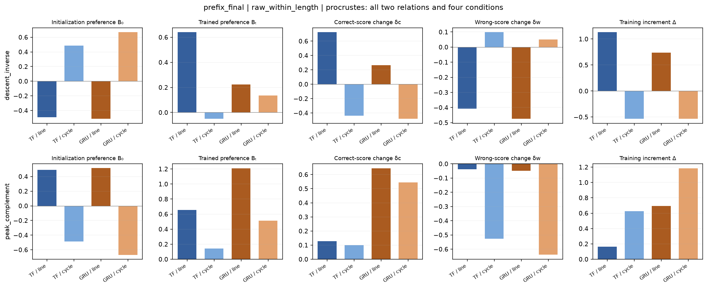
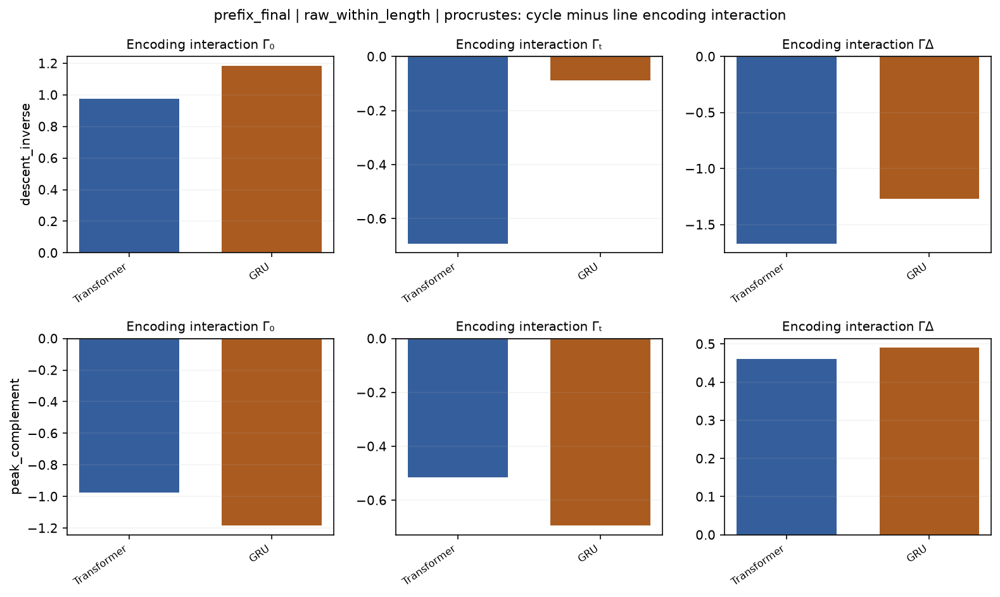
| architecture | encoding | relation | B0 | Bt | change_correct | change_wrong | Delta | undefined_lengths |
|---|---|---|---|---|---|---|---|---|
| transformer | one_line | descent_inverse | -0.49146 | 0.64084 | 0.72507 | -0.40722 | 1.13229 | 0 |
| transformer | canonical_cycle | descent_inverse | 0.48520 | -0.05106 | -0.43726 | 0.09900 | -0.53626 | 0 |
| gru | one_line | descent_inverse | -0.51421 | 0.22420 | 0.26333 | -0.47509 | 0.73841 | 0 |
| gru | canonical_cycle | descent_inverse | 0.66963 | 0.13620 | -0.48283 | 0.05059 | -0.53343 | 0 |
| transformer | one_line | peak_complement | 0.49146 | 0.65647 | 0.12714 | -0.03787 | 0.16501 | 0 |
| transformer | canonical_cycle | peak_complement | -0.48520 | 0.14059 | 0.09944 | -0.52636 | 0.62579 | 0 |
| gru | one_line | peak_complement | 0.51421 | 1.20829 | 0.64402 | -0.05006 | 0.69408 | 0 |
| gru | canonical_cycle | peak_complement | -0.66963 | 0.51430 | 0.54512 | -0.63881 | 1.18393 | 0 |
| architecture | relation | Gamma0 | Gammat | Gamma_correct | Gamma_wrong | GammaDelta |
|---|---|---|---|---|---|---|
| transformer | descent_inverse | 0.97666 | -0.69190 | -1.16233 | 0.50622 | -1.66856 |
| gru | descent_inverse | 1.18384 | -0.08800 | -0.74616 | 0.52568 | -1.27184 |
| transformer | peak_complement | -0.97666 | -0.51587 | -0.02770 | -0.48848 | 0.46078 |
| gru | peak_complement | -1.18384 | -0.69399 | -0.09889 | -0.58875 | 0.48985 |
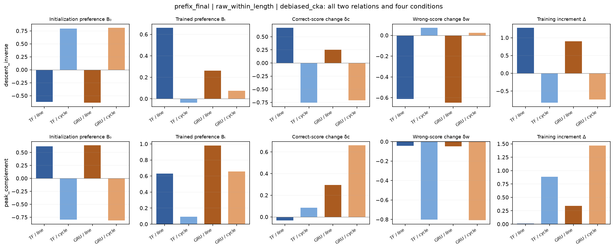
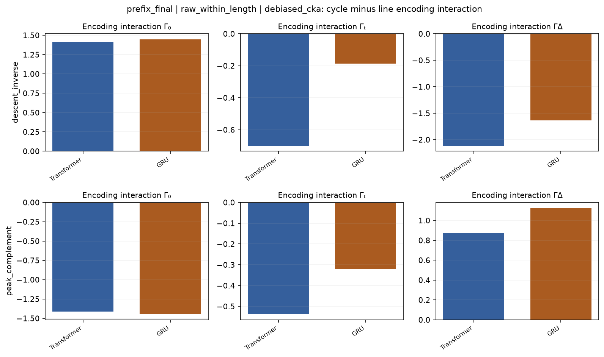
| architecture | encoding | relation | B0 | Bt | change_correct | change_wrong | Delta | undefined_lengths |
|---|---|---|---|---|---|---|---|---|
| transformer | one_line | descent_inverse | -0.61925 | 0.66172 | 0.67030 | -0.61067 | 1.28097 | 0 |
| transformer | canonical_cycle | descent_inverse | 0.79364 | -0.03734 | -0.75815 | 0.07283 | -0.83098 | 0 |
| gru | one_line | descent_inverse | -0.63666 | 0.26181 | 0.24995 | -0.64851 | 0.89847 | 0 |
| gru | canonical_cycle | descent_inverse | 0.81047 | 0.07431 | -0.71115 | 0.02500 | -0.73615 | 0 |
| transformer | one_line | peak_complement | 0.61925 | 0.62943 | -0.03160 | -0.04178 | 0.01018 | 0 |
| transformer | canonical_cycle | peak_complement | -0.79364 | 0.09154 | 0.08403 | -0.80116 | 0.88519 | 0 |
| gru | one_line | peak_complement | 0.63666 | 0.97995 | 0.29424 | -0.04905 | 0.34330 | 0 |
| gru | canonical_cycle | peak_complement | -0.81047 | 0.65800 | 0.66042 | -0.80805 | 1.46847 | 0 |
| architecture | relation | Gamma0 | Gammat | Gamma_correct | Gamma_wrong | GammaDelta |
|---|---|---|---|---|---|---|
| transformer | descent_inverse | 1.41290 | -0.69906 | -1.42845 | 0.68350 | -2.11196 |
| gru | descent_inverse | 1.44712 | -0.18750 | -0.96111 | 0.67352 | -1.63462 |
| transformer | peak_complement | -1.41290 | -0.53789 | 0.11563 | -0.75938 | 0.87501 |
| gru | peak_complement | -1.44712 | -0.32195 | 0.36618 | -0.75900 | 1.12517 |
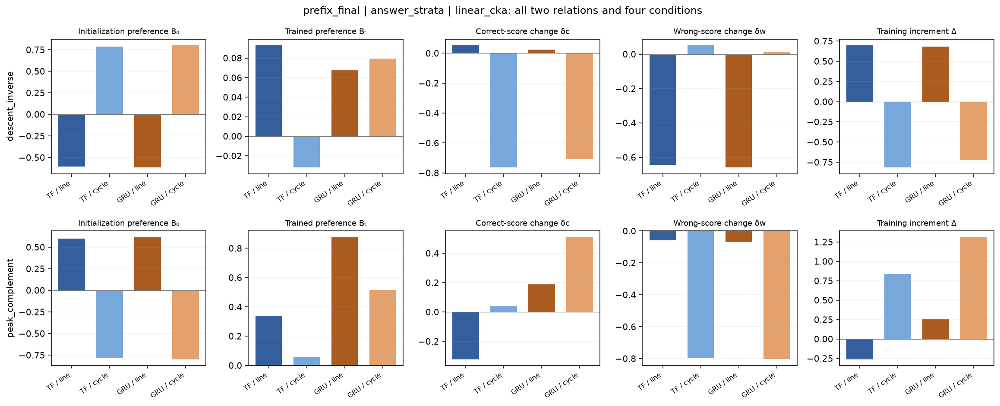
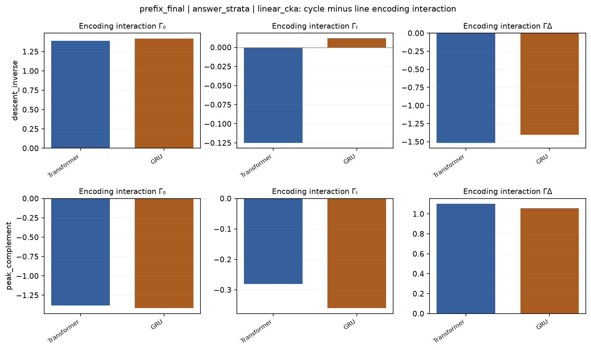
| architecture | encoding | relation | B0 | Bt | change_correct | change_wrong | Delta | undefined_lengths |
|---|---|---|---|---|---|---|---|---|
| transformer | one_line | descent_inverse | -0.60488 | 0.09312 | 0.05315 | -0.64485 | 0.69800 | 0 |
| transformer | canonical_cycle | descent_inverse | 0.78453 | -0.03204 | -0.76457 | 0.05201 | -0.81658 | 0 |
| gru | one_line | descent_inverse | -0.61692 | 0.06750 | 0.02435 | -0.66008 | 0.68443 | 0 |
| gru | canonical_cycle | descent_inverse | 0.80096 | 0.07928 | -0.70783 | 0.01385 | -0.72168 | 0 |
| transformer | one_line | peak_complement | 0.60031 | 0.33820 | -0.32235 | -0.06023 | -0.26212 | 0 |
| transformer | canonical_cycle | peak_complement | -0.78043 | 0.05699 | 0.03939 | -0.79803 | 0.83742 | 0 |
| gru | one_line | peak_complement | 0.61711 | 0.87446 | 0.18813 | -0.06922 | 0.25735 | 0 |
| gru | canonical_cycle | peak_complement | -0.79896 | 0.51449 | 0.51022 | -0.80323 | 1.31345 | 0 |
| architecture | relation | Gamma0 | Gammat | Gamma_correct | Gamma_wrong | GammaDelta |
|---|---|---|---|---|---|---|
| transformer | descent_inverse | 1.38942 | -0.12516 | -0.81771 | 0.69686 | -1.51458 |
| gru | descent_inverse | 1.41788 | 0.01177 | -0.73218 | 0.67393 | -1.40611 |
| transformer | peak_complement | -1.38075 | -0.28120 | 0.36174 | -0.73780 | 1.09954 |
| gru | peak_complement | -1.41606 | -0.35997 | 0.32208 | -0.73401 | 1.05609 |
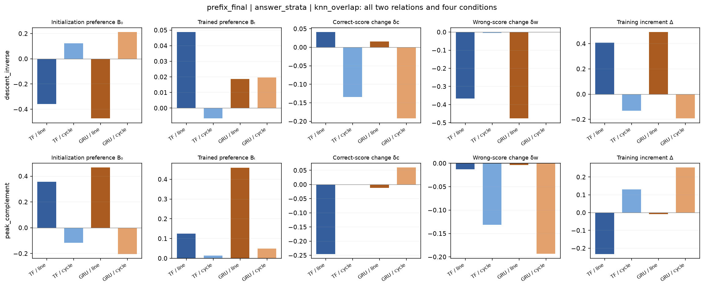
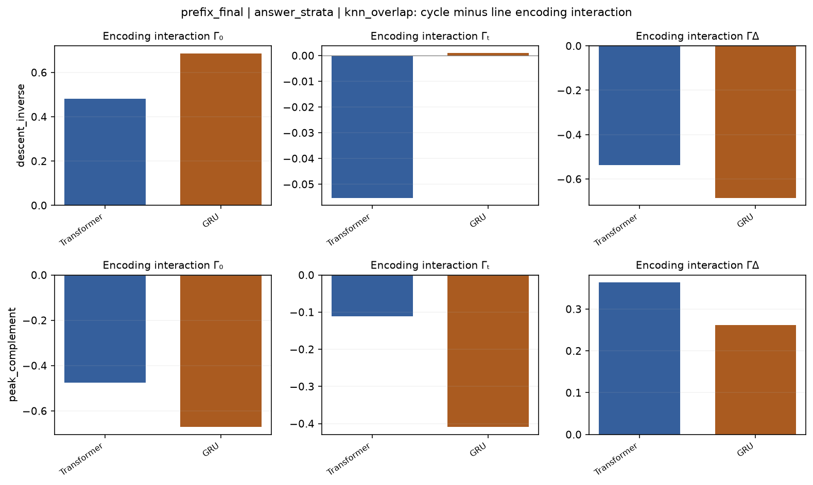
| architecture | encoding | relation | B0 | Bt | change_correct | change_wrong | Delta | undefined_lengths |
|---|---|---|---|---|---|---|---|---|
| transformer | one_line | descent_inverse | -0.35864 | 0.04876 | 0.04119 | -0.36621 | 0.40740 | 0 |
| transformer | canonical_cycle | descent_inverse | 0.12336 | -0.00666 | -0.13423 | -0.00422 | -0.13001 | 0 |
| gru | one_line | descent_inverse | -0.47351 | 0.01866 | 0.01568 | -0.47648 | 0.49217 | 0 |
| gru | canonical_cycle | descent_inverse | 0.21217 | 0.01961 | -0.19241 | 0.00015 | -0.19256 | 0 |
| transformer | one_line | peak_complement | 0.35695 | 0.12443 | -0.24548 | -0.01296 | -0.23252 | 0 |
| transformer | canonical_cycle | peak_complement | -0.11728 | 0.01345 | -0.00077 | -0.13150 | 0.13074 | 0 |
| gru | one_line | peak_complement | 0.46670 | 0.45817 | -0.01222 | -0.00369 | -0.00853 | 0 |
| gru | canonical_cycle | peak_complement | -0.20391 | 0.04925 | 0.05975 | -0.19341 | 0.25316 | 0 |
| architecture | relation | Gamma0 | Gammat | Gamma_correct | Gamma_wrong | GammaDelta |
|---|---|---|---|---|---|---|
| transformer | descent_inverse | 0.48199 | -0.05542 | -0.17542 | 0.36199 | -0.53741 |
| gru | descent_inverse | 0.68568 | 0.00095 | -0.20810 | 0.47663 | -0.68473 |
| transformer | peak_complement | -0.47423 | -0.11098 | 0.24471 | -0.11854 | 0.36325 |
| gru | peak_complement | -0.67061 | -0.40892 | 0.07197 | -0.18972 | 0.26169 |
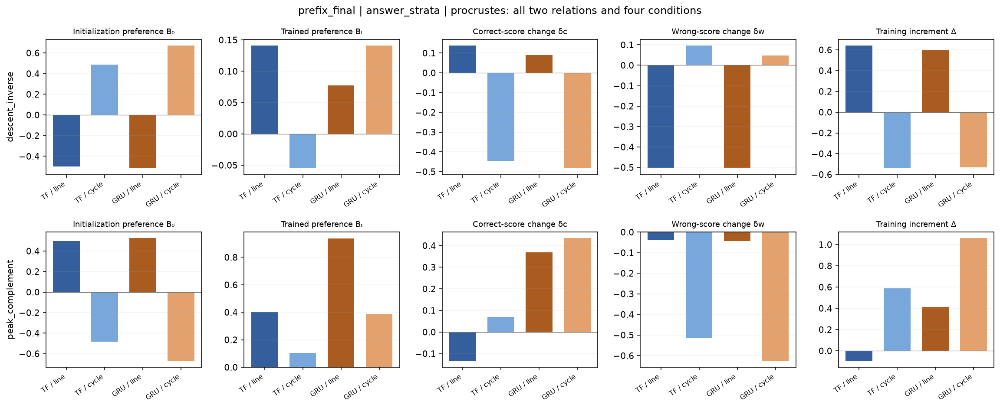
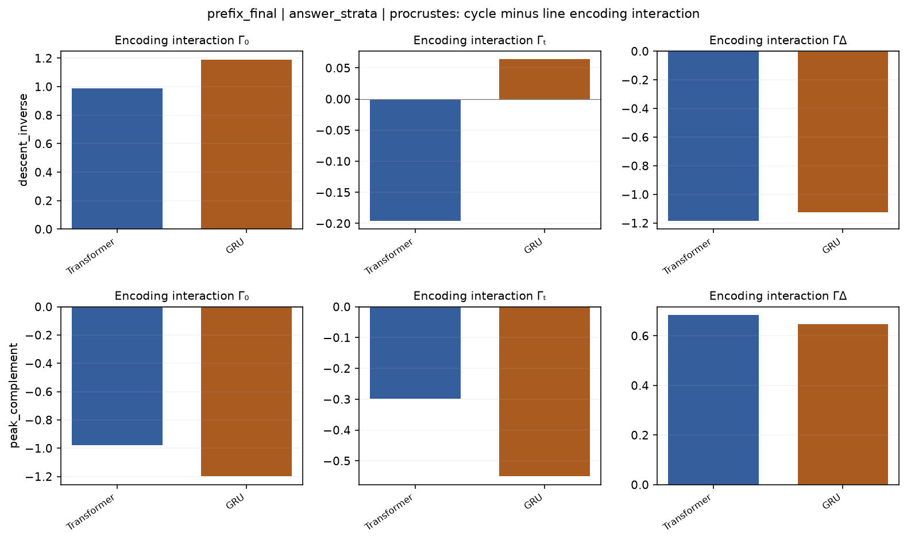
| architecture | encoding | relation | B0 | Bt | change_correct | change_wrong | Delta | undefined_lengths |
|---|---|---|---|---|---|---|---|---|
| transformer | one_line | descent_inverse | -0.50030 | 0.14096 | 0.13803 | -0.50323 | 0.64126 | 0 |
| transformer | canonical_cycle | descent_inverse | 0.48661 | -0.05516 | -0.44528 | 0.09649 | -0.54177 | 0 |
| gru | one_line | descent_inverse | -0.51783 | 0.07708 | 0.09005 | -0.50486 | 0.59491 | 0 |
| gru | canonical_cycle | descent_inverse | 0.67159 | 0.14104 | -0.48386 | 0.04670 | -0.53056 | 0 |
| transformer | one_line | peak_complement | 0.49872 | 0.40162 | -0.13464 | -0.03753 | -0.09710 | 0 |
| transformer | canonical_cycle | peak_complement | -0.48188 | 0.10405 | 0.07038 | -0.51555 | 0.58593 | 0 |
| gru | one_line | peak_complement | 0.52491 | 0.93646 | 0.36845 | -0.04310 | 0.41155 | 0 |
| gru | canonical_cycle | peak_complement | -0.67291 | 0.38668 | 0.43419 | -0.62540 | 1.05959 | 0 |
| architecture | relation | Gamma0 | Gammat | Gamma_correct | Gamma_wrong | GammaDelta |
|---|---|---|---|---|---|---|
| transformer | descent_inverse | 0.98691 | -0.19612 | -0.58330 | 0.59972 | -1.18303 |
| gru | descent_inverse | 1.18943 | 0.06396 | -0.57391 | 0.55156 | -1.12547 |
| transformer | peak_complement | -0.98060 | -0.29757 | 0.20502 | -0.47801 | 0.68303 |
| gru | peak_complement | -1.19782 | -0.54978 | 0.06573 | -0.58230 | 0.64803 |
| architecture | encoding | relation | B0 | Bt | change_correct | change_wrong | Delta | undefined_lengths |
|---|---|---|---|---|---|---|---|---|
| transformer | one_line | descent_inverse | -0.62222 | 0.09445 | 0.07248 | -0.64419 | 0.71667 | 0 |
| transformer | canonical_cycle | descent_inverse | 0.79413 | -0.03278 | -0.76627 | 0.06065 | -0.82691 | 0 |
| gru | one_line | descent_inverse | -0.63573 | 0.06830 | 0.04072 | -0.66331 | 0.70403 | 0 |
| gru | canonical_cycle | descent_inverse | 0.81176 | 0.07985 | -0.71207 | 0.01983 | -0.73191 | 0 |
| transformer | one_line | peak_complement | 0.61796 | 0.34194 | -0.31950 | -0.04348 | -0.27602 | 0 |
| transformer | canonical_cycle | peak_complement | -0.79031 | 0.05722 | 0.04857 | -0.79896 | 0.84753 | 0 |
| gru | one_line | peak_complement | 0.63643 | 0.88405 | 0.19671 | -0.05091 | 0.24762 | 0 |
| gru | canonical_cycle | peak_complement | -0.81007 | 0.51849 | 0.52214 | -0.80642 | 1.32856 | 0 |
| architecture | relation | Gamma0 | Gammat | Gamma_correct | Gamma_wrong | GammaDelta |
|---|---|---|---|---|---|---|
| transformer | descent_inverse | 1.41636 | -0.12723 | -0.83875 | 0.70484 | -1.54359 |
| gru | descent_inverse | 1.44749 | 0.01156 | -0.75280 | 0.68314 | -1.43594 |
| transformer | peak_complement | -1.40827 | -0.28472 | 0.36808 | -0.75548 | 1.12355 |
| gru | peak_complement | -1.44649 | -0.36556 | 0.32543 | -0.75551 | 1.08094 |
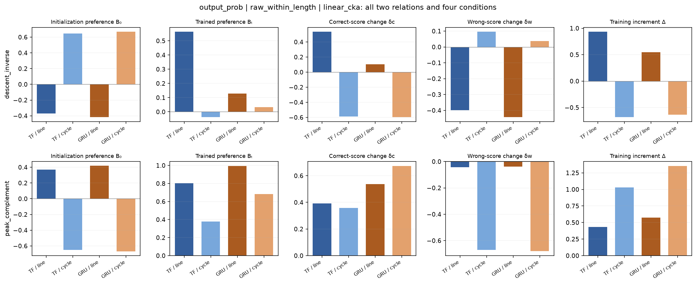
| architecture | encoding | relation | B0 | Bt | change_correct | change_wrong | Delta | undefined_lengths |
|---|---|---|---|---|---|---|---|---|
| transformer | one_line | descent_inverse | -0.37046 | 0.56420 | 0.53624 | -0.39842 | 0.93466 | 0 |
| transformer | canonical_cycle | descent_inverse | 0.64581 | -0.03817 | -0.58777 | 0.09620 | -0.68398 | 0 |
| gru | one_line | descent_inverse | -0.41827 | 0.12829 | 0.10326 | -0.44330 | 0.54656 | 0 |
| gru | canonical_cycle | descent_inverse | 0.66913 | 0.03309 | -0.59810 | 0.03794 | -0.63604 | 0 |
| transformer | one_line | peak_complement | 0.36932 | 0.80431 | 0.39222 | -0.04277 | 0.43499 | 0 |
| transformer | canonical_cycle | peak_complement | -0.65139 | 0.37807 | 0.35828 | -0.67118 | 1.02947 | 0 |
| gru | one_line | peak_complement | 0.41816 | 0.99347 | 0.53700 | -0.03832 | 0.57532 | 0 |
| gru | canonical_cycle | peak_complement | -0.66907 | 0.68383 | 0.67287 | -0.68003 | 1.35290 | 0 |
| architecture | relation | Gamma0 | Gammat | Gamma_correct | Gamma_wrong | GammaDelta |
|---|---|---|---|---|---|---|
| transformer | descent_inverse | 1.01627 | -0.60237 | -1.12402 | 0.49462 | -1.61864 |
| gru | descent_inverse | 1.08740 | -0.09520 | -0.70136 | 0.48124 | -1.18260 |
| transformer | peak_complement | -1.02072 | -0.42624 | -0.03393 | -0.62841 | 0.59448 |
| gru | peak_complement | -1.08723 | -0.30964 | 0.13587 | -0.64171 | 0.77758 |
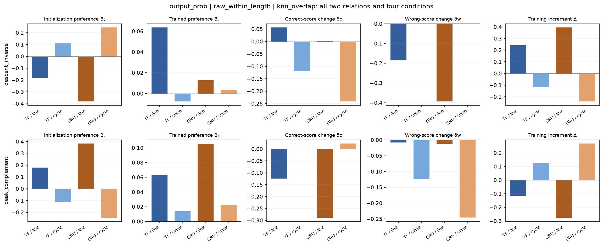
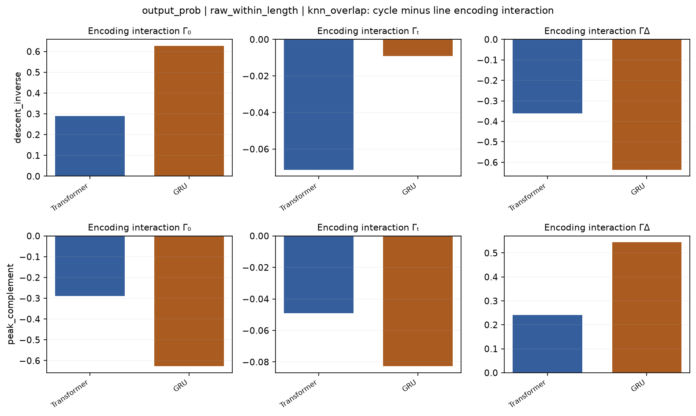
| architecture | encoding | relation | B0 | Bt | change_correct | change_wrong | Delta | undefined_lengths |
|---|---|---|---|---|---|---|---|---|
| transformer | one_line | descent_inverse | -0.17915 | 0.06363 | 0.05653 | -0.18624 | 0.24277 | 0 |
| transformer | canonical_cycle | descent_inverse | 0.10995 | -0.00767 | -0.11961 | -0.00199 | -0.11762 | 0 |
| gru | one_line | descent_inverse | -0.38201 | 0.01287 | 0.00166 | -0.39323 | 0.39488 | 0 |
| gru | canonical_cycle | descent_inverse | 0.24475 | 0.00371 | -0.24182 | -0.00079 | -0.24103 | 0 |
| transformer | one_line | peak_complement | 0.17885 | 0.06318 | -0.12405 | -0.00838 | -0.11567 | 0 |
| transformer | canonical_cycle | peak_complement | -0.11088 | 0.01399 | -0.00020 | -0.12507 | 0.12487 | 0 |
| gru | one_line | peak_complement | 0.38192 | 0.10553 | -0.28892 | -0.01254 | -0.27639 | 0 |
| gru | canonical_cycle | peak_complement | -0.24492 | 0.02286 | 0.02215 | -0.24563 | 0.26778 | 0 |
| architecture | relation | Gamma0 | Gammat | Gamma_correct | Gamma_wrong | GammaDelta |
|---|---|---|---|---|---|---|
| transformer | descent_inverse | 0.28910 | -0.07130 | -0.17614 | 0.18425 | -0.36040 |
| gru | descent_inverse | 0.62676 | -0.00916 | -0.24348 | 0.39244 | -0.63592 |
| transformer | peak_complement | -0.28973 | -0.04919 | 0.12386 | -0.11669 | 0.24054 |
| gru | peak_complement | -0.62684 | -0.08267 | 0.31108 | -0.23309 | 0.54417 |
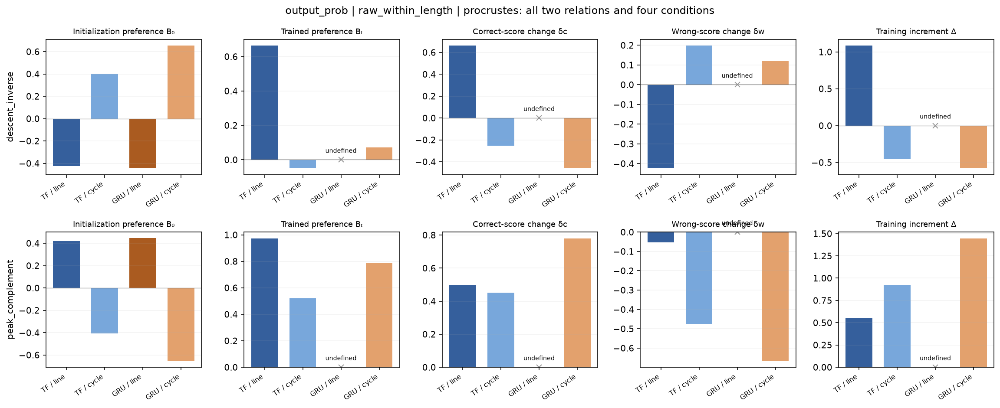
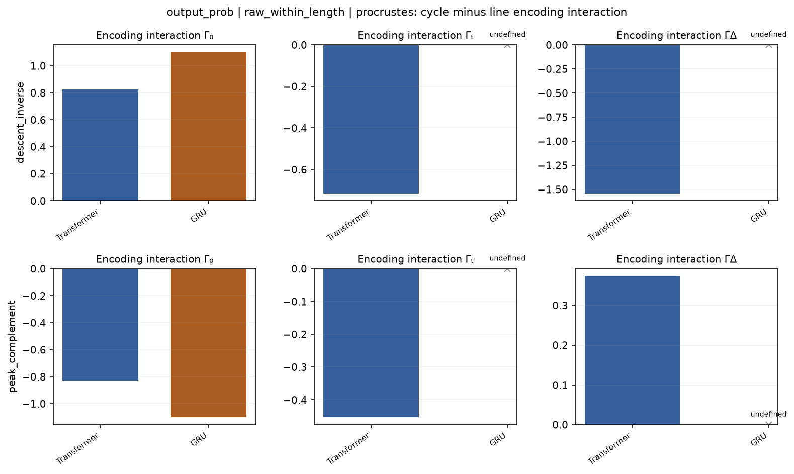
| architecture | encoding | relation | B0 | Bt | change_correct | change_wrong | Delta | undefined_lengths |
|---|---|---|---|---|---|---|---|---|
| transformer | one_line | descent_inverse | -0.42284 | 0.66438 | 0.66282 | -0.42440 | 1.08722 | 0 |
| transformer | canonical_cycle | descent_inverse | 0.40336 | -0.05047 | -0.25523 | 0.19859 | -0.45382 | 0 |
| gru | one_line | descent_inverse | -0.44567 | undefined | undefined | undefined | undefined | 3 |
| gru | canonical_cycle | descent_inverse | 0.65438 | 0.07274 | -0.46132 | 0.12033 | -0.58165 | 0 |
| transformer | one_line | peak_complement | 0.41896 | 0.97241 | 0.49956 | -0.05389 | 0.55345 | 0 |
| transformer | canonical_cycle | peak_complement | -0.40739 | 0.51937 | 0.45234 | -0.47442 | 0.92676 | 0 |
| gru | one_line | peak_complement | 0.44528 | undefined | undefined | undefined | undefined | 16 |
| gru | canonical_cycle | peak_complement | -0.65472 | 0.79017 | 0.77911 | -0.66579 | 1.44490 | 0 |
| architecture | relation | Gamma0 | Gammat | Gamma_correct | Gamma_wrong | GammaDelta |
|---|---|---|---|---|---|---|
| transformer | descent_inverse | 0.82620 | -0.71484 | -0.91805 | 0.62299 | -1.54104 |
| gru | descent_inverse | 1.10006 | undefined | undefined | undefined | undefined |
| transformer | peak_complement | -0.82635 | -0.45305 | -0.04722 | -0.42053 | 0.37331 |
| gru | peak_complement | -1.10000 | undefined | undefined | undefined | undefined |
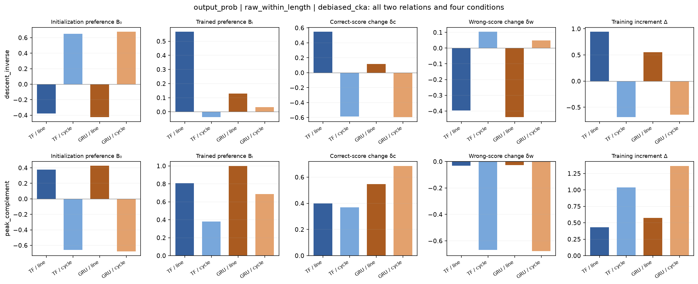
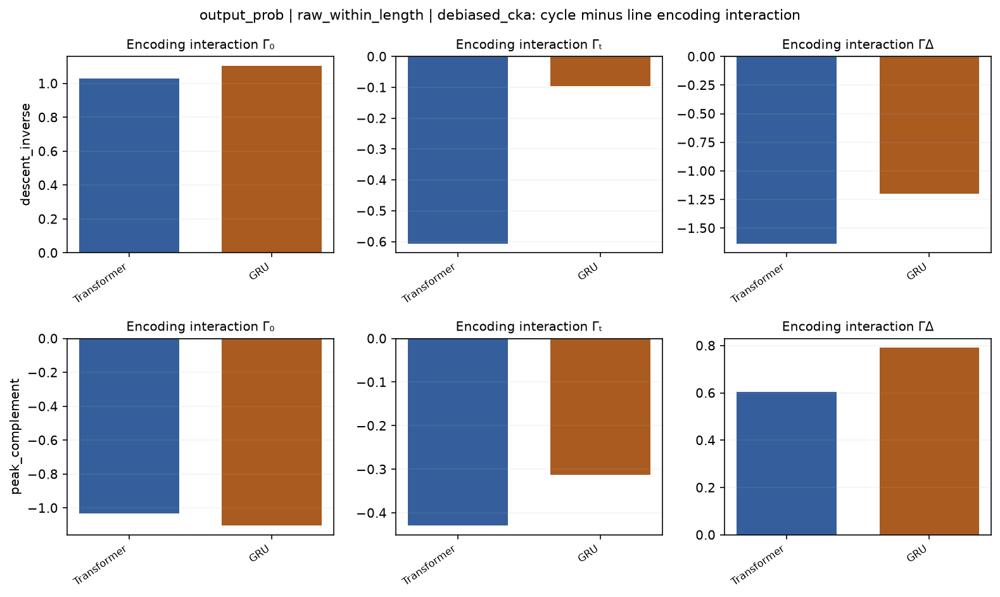
| architecture | encoding | relation | B0 | Bt | change_correct | change_wrong | Delta | undefined_lengths |
|---|---|---|---|---|---|---|---|---|
| transformer | one_line | descent_inverse | -0.37712 | 0.56767 | 0.54909 | -0.39570 | 0.94479 | 0 |
| transformer | canonical_cycle | descent_inverse | 0.65189 | -0.03839 | -0.58579 | 0.10449 | -0.69028 | 0 |
| gru | one_line | descent_inverse | -0.42618 | 0.12885 | 0.11539 | -0.43964 | 0.55503 | 0 |
| gru | canonical_cycle | descent_inverse | 0.67756 | 0.03311 | -0.59622 | 0.04824 | -0.64445 | 0 |
| transformer | one_line | peak_complement | 0.37597 | 0.80829 | 0.40003 | -0.03230 | 0.43232 | 0 |
| transformer | canonical_cycle | peak_complement | -0.65746 | 0.37929 | 0.36811 | -0.66864 | 1.03675 | 0 |
| gru | one_line | peak_complement | 0.42607 | 0.99887 | 0.54571 | -0.02709 | 0.57280 | 0 |
| gru | canonical_cycle | peak_complement | -0.67750 | 0.68568 | 0.68512 | -0.67805 | 1.36318 | 0 |
| architecture | relation | Gamma0 | Gammat | Gamma_correct | Gamma_wrong | GammaDelta |
|---|---|---|---|---|---|---|
| transformer | descent_inverse | 1.02901 | -0.60606 | -1.13488 | 0.50019 | -1.63507 |
| gru | descent_inverse | 1.10374 | -0.09574 | -0.71161 | 0.48787 | -1.19948 |
| transformer | peak_complement | -1.03342 | -0.42900 | -0.03192 | -0.63634 | 0.60442 |
| gru | peak_complement | -1.10356 | -0.31319 | 0.13941 | -0.65096 | 0.79037 |
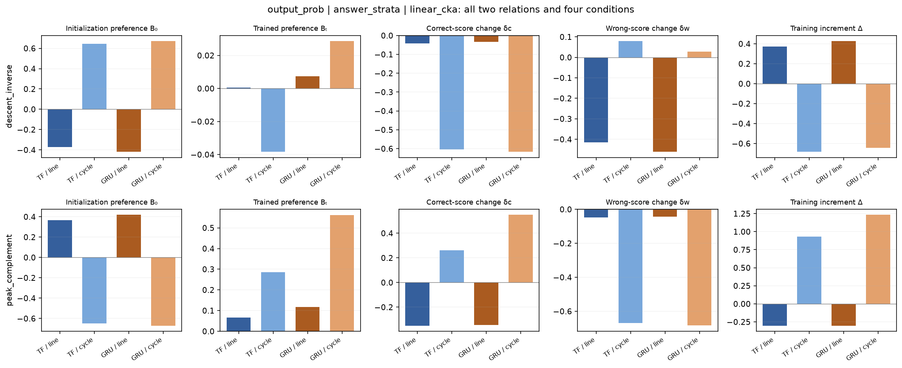
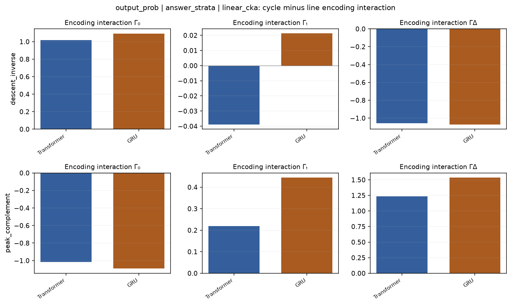
| architecture | encoding | relation | B0 | Bt | change_correct | change_wrong | Delta | undefined_lengths |
|---|---|---|---|---|---|---|---|---|
| transformer | one_line | descent_inverse | -0.37260 | 0.00055 | -0.04194 | -0.41510 | 0.37315 | 0 |
| transformer | canonical_cycle | descent_inverse | 0.64603 | -0.03841 | -0.60491 | 0.07954 | -0.68445 | 0 |
| gru | one_line | descent_inverse | -0.42005 | 0.00744 | -0.03397 | -0.46146 | 0.42749 | 0 |
| gru | canonical_cycle | descent_inverse | 0.67183 | 0.02870 | -0.61585 | 0.02728 | -0.64313 | 0 |
| transformer | one_line | peak_complement | 0.36826 | 0.06542 | -0.35055 | -0.04770 | -0.30284 | 0 |
| transformer | canonical_cycle | peak_complement | -0.64735 | 0.28517 | 0.26290 | -0.66961 | 0.93252 | 0 |
| gru | one_line | peak_complement | 0.41875 | 0.11760 | -0.34388 | -0.04272 | -0.30116 | 0 |
| gru | canonical_cycle | peak_complement | -0.67097 | 0.56159 | 0.54911 | -0.68344 | 1.23256 | 0 |
| architecture | relation | Gamma0 | Gammat | Gamma_correct | Gamma_wrong | GammaDelta |
|---|---|---|---|---|---|---|
| transformer | descent_inverse | 1.01864 | -0.03896 | -0.56297 | 0.49463 | -1.05760 |
| gru | descent_inverse | 1.09188 | 0.02126 | -0.58188 | 0.48874 | -1.07062 |
| transformer | peak_complement | -1.01560 | 0.21975 | 0.61345 | -0.62191 | 1.23536 |
| gru | peak_complement | -1.08972 | 0.44399 | 0.89299 | -0.64072 | 1.53371 |
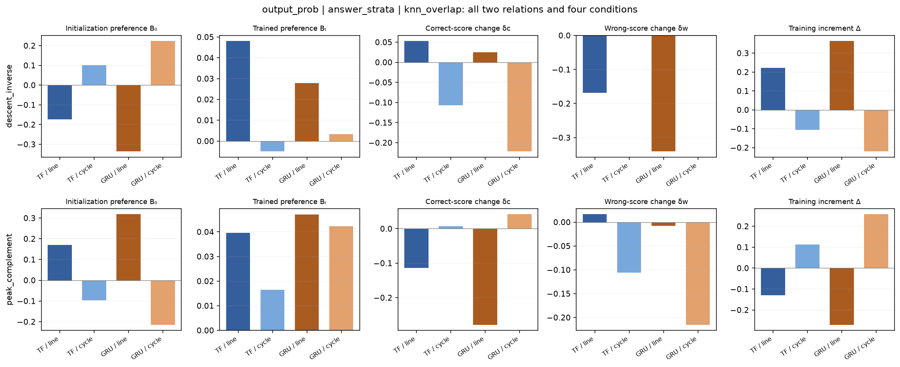
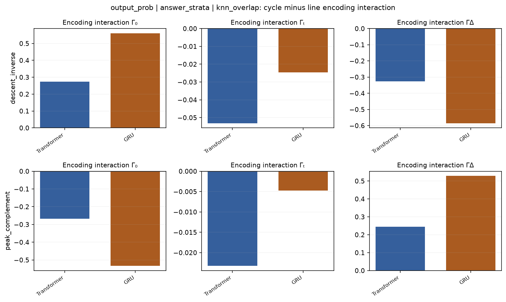
| architecture | encoding | relation | B0 | Bt | change_correct | change_wrong | Delta | undefined_lengths |
|---|---|---|---|---|---|---|---|---|
| transformer | one_line | descent_inverse | -0.17316 | 0.04810 | 0.05299 | -0.16826 | 0.22125 | 0 |
| transformer | canonical_cycle | descent_inverse | 0.10096 | -0.00502 | -0.10750 | -0.00153 | -0.10597 | 0 |
| gru | one_line | descent_inverse | -0.33647 | 0.02789 | 0.02439 | -0.33996 | 0.36436 | 0 |
| gru | canonical_cycle | descent_inverse | 0.22379 | 0.00334 | -0.22197 | -0.00151 | -0.22045 | 0 |
| transformer | one_line | peak_complement | 0.17030 | 0.03967 | -0.11416 | 0.01647 | -0.13063 | 0 |
| transformer | canonical_cycle | peak_complement | -0.09693 | 0.01644 | 0.00746 | -0.10590 | 0.11337 | 0 |
| gru | one_line | peak_complement | 0.31815 | 0.04703 | -0.27878 | -0.00765 | -0.27113 | 0 |
| gru | canonical_cycle | peak_complement | -0.21485 | 0.04225 | 0.04165 | -0.21545 | 0.25710 | 0 |
| architecture | relation | Gamma0 | Gammat | Gamma_correct | Gamma_wrong | GammaDelta |
|---|---|---|---|---|---|---|
| transformer | descent_inverse | 0.27411 | -0.05312 | -0.16050 | 0.16673 | -0.32723 |
| gru | descent_inverse | 0.56027 | -0.02454 | -0.24636 | 0.33845 | -0.58481 |
| transformer | peak_complement | -0.26723 | -0.02324 | 0.12163 | -0.12237 | 0.24400 |
| gru | peak_complement | -0.53301 | -0.00478 | 0.32043 | -0.20780 | 0.52822 |
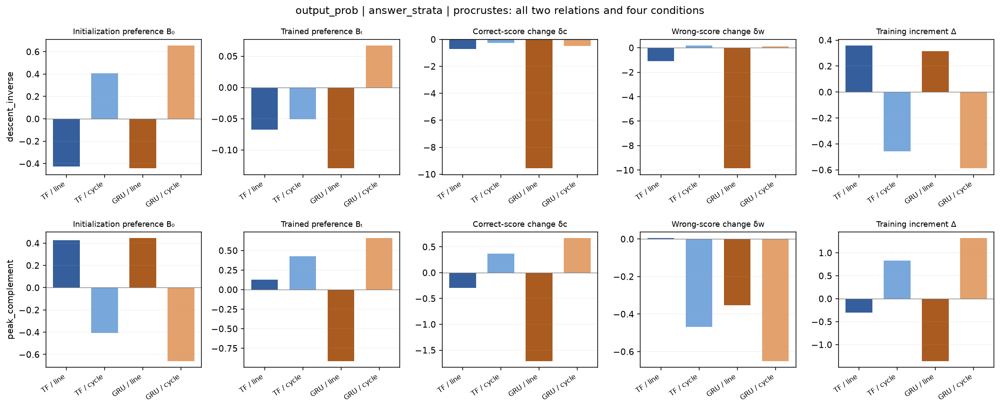
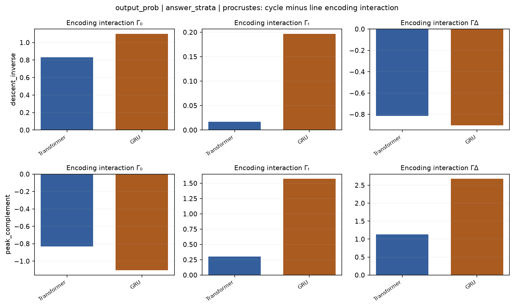
| architecture | encoding | relation | B0 | Bt | change_correct | change_wrong | Delta | undefined_lengths |
|---|---|---|---|---|---|---|---|---|
| transformer | one_line | descent_inverse | -0.42624 | -0.06773 | -0.72442 | -1.08292 | 0.35850 | 0 |
| transformer | canonical_cycle | descent_inverse | 0.40629 | -0.05107 | -0.27111 | 0.18625 | -0.45735 | 0 |
| gru | one_line | descent_inverse | -0.44355 | -0.12955 | -9.54782 | -9.86181 | 0.31399 | 0 |
| gru | canonical_cycle | descent_inverse | 0.65544 | 0.06710 | -0.48253 | 0.10581 | -0.58834 | 0 |
| transformer | one_line | peak_complement | 0.42687 | 0.12875 | -0.29362 | 0.00449 | -0.29812 | 0 |
| transformer | canonical_cycle | peak_complement | -0.40577 | 0.42942 | 0.36644 | -0.46875 | 0.83519 | 0 |
| gru | one_line | peak_complement | 0.44470 | -0.91360 | -1.71205 | -0.35375 | -1.35830 | 0 |
| gru | canonical_cycle | peak_complement | -0.66008 | 0.65810 | 0.66753 | -0.65065 | 1.31818 | 0 |
| architecture | relation | Gamma0 | Gammat | Gamma_correct | Gamma_wrong | GammaDelta |
|---|---|---|---|---|---|---|
| transformer | descent_inverse | 0.83252 | 0.01667 | 0.45331 | 1.26917 | -0.81586 |
| gru | descent_inverse | 1.09898 | 0.19665 | 9.06529 | 9.96762 | -0.90233 |
| transformer | peak_complement | -0.83263 | 0.30067 | 0.66006 | -0.47324 | 1.13330 |
| gru | peak_complement | -1.10478 | 1.57170 | 2.37958 | -0.29689 | 2.67648 |
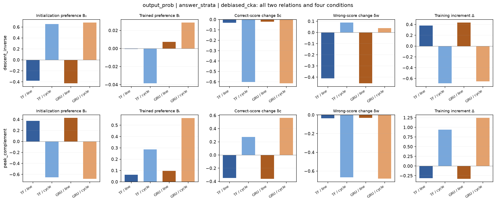
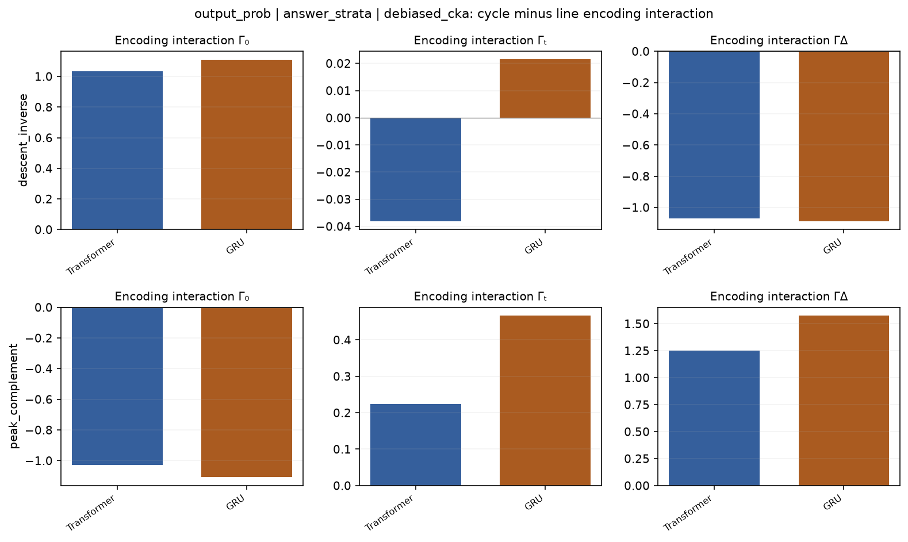
| architecture | encoding | relation | B0 | Bt | change_correct | change_wrong | Delta | undefined_lengths |
|---|---|---|---|---|---|---|---|---|
| transformer | one_line | descent_inverse | -0.37951 | -0.00046 | -0.03078 | -0.40984 | 0.37905 | 0 |
| transformer | canonical_cycle | descent_inverse | 0.65245 | -0.03865 | -0.60279 | 0.08832 | -0.69110 | 0 |
| gru | one_line | descent_inverse | -0.42819 | 0.00725 | -0.02019 | -0.45563 | 0.43544 | 0 |
| gru | canonical_cycle | descent_inverse | 0.68067 | 0.02873 | -0.61400 | 0.03795 | -0.65195 | 0 |
| transformer | one_line | peak_complement | 0.37522 | 0.06221 | -0.34965 | -0.03664 | -0.31301 | 0 |
| transformer | canonical_cycle | peak_complement | -0.65389 | 0.28603 | 0.27301 | -0.66691 | 0.93992 | 0 |
| gru | one_line | peak_complement | 0.42724 | 0.09686 | -0.36087 | -0.03049 | -0.33038 | 0 |
| gru | canonical_cycle | peak_complement | -0.68005 | 0.56305 | 0.56163 | -0.68147 | 1.24310 | 0 |
| architecture | relation | Gamma0 | Gammat | Gamma_correct | Gamma_wrong | GammaDelta |
|---|---|---|---|---|---|---|
| transformer | descent_inverse | 1.03197 | -0.03819 | -0.57200 | 0.49816 | -1.07016 |
| gru | descent_inverse | 1.10886 | 0.02147 | -0.59382 | 0.49358 | -1.08739 |
| transformer | peak_complement | -1.02911 | 0.22381 | 0.62266 | -0.63027 | 1.25293 |
| gru | peak_complement | -1.10729 | 0.46619 | 0.92250 | -0.65099 | 1.57348 |
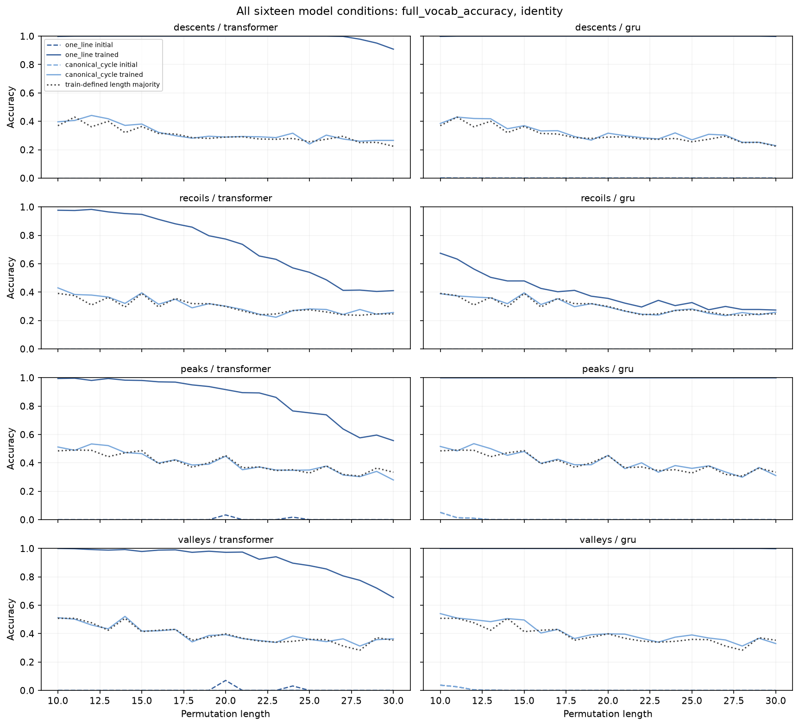
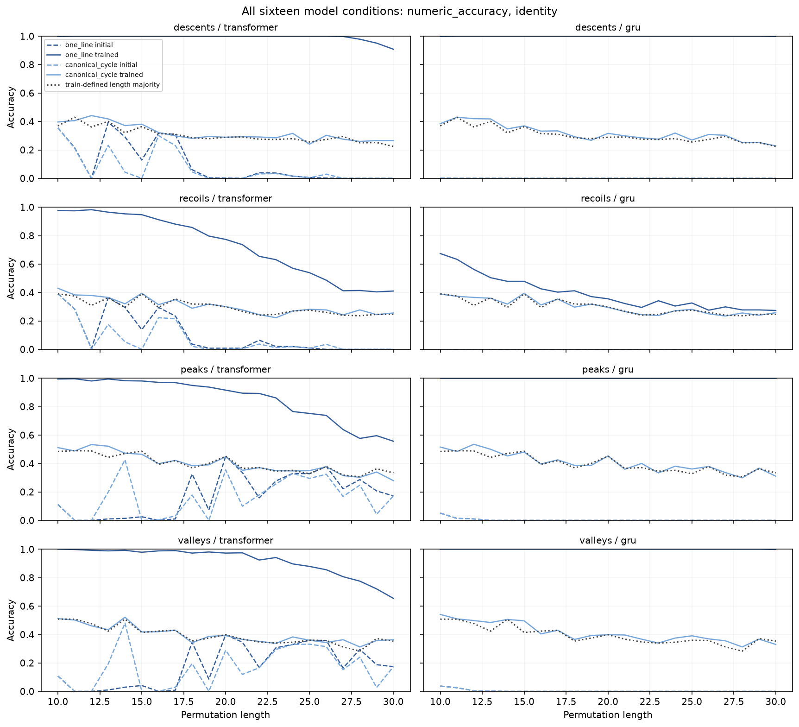
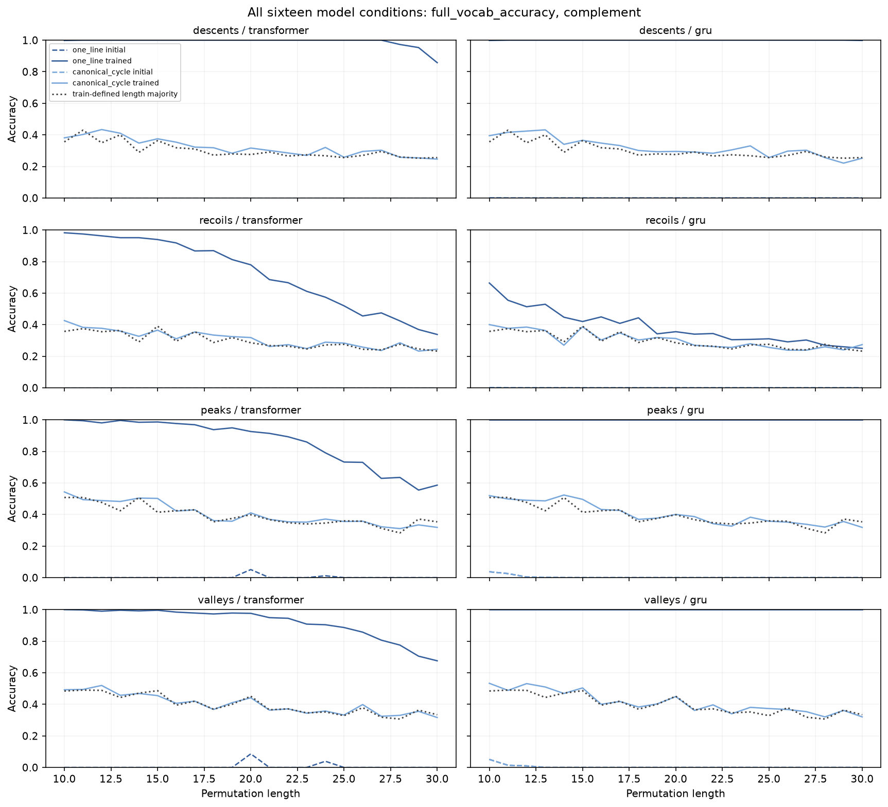
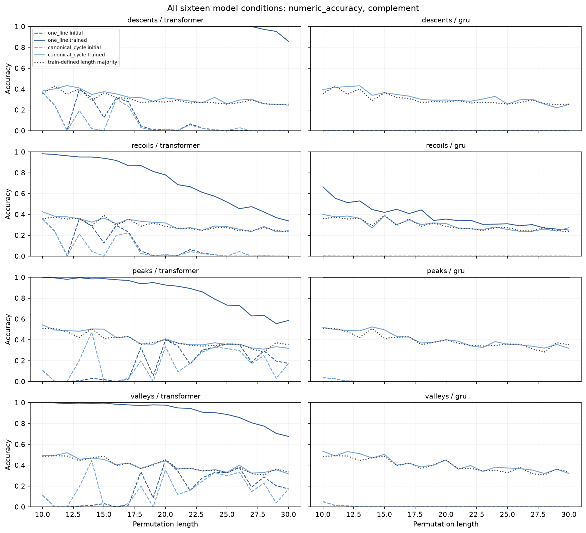
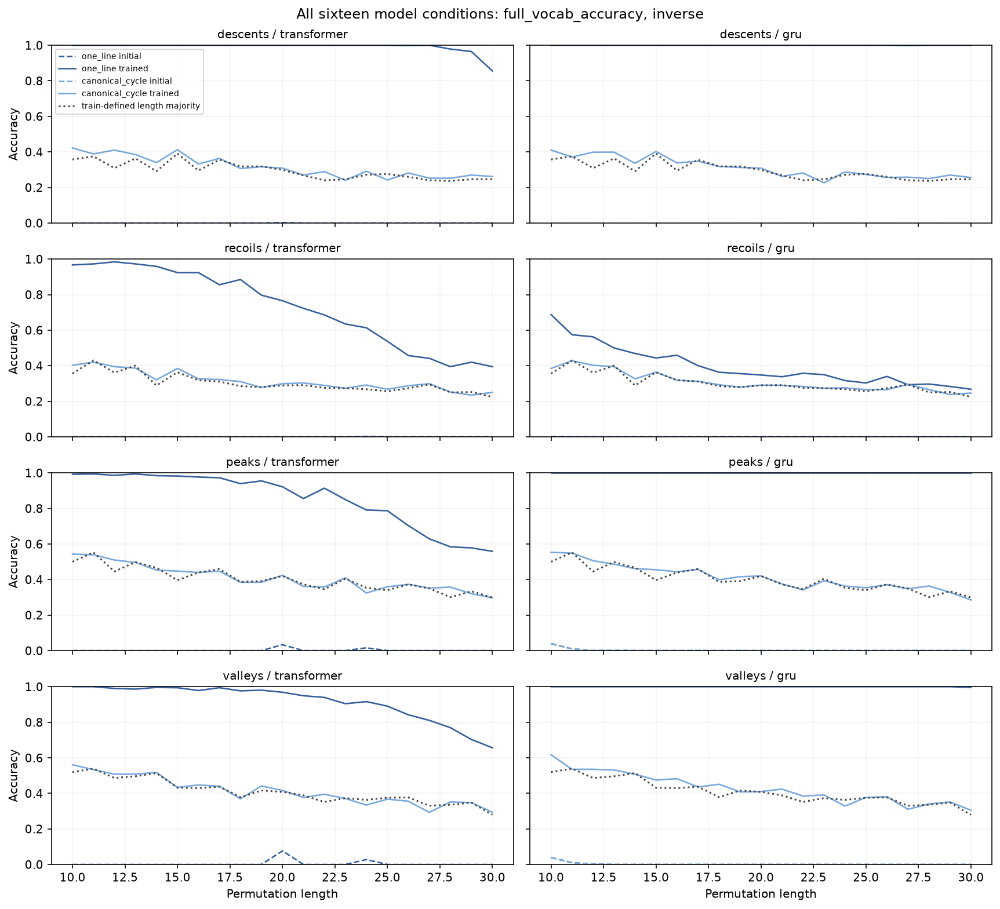
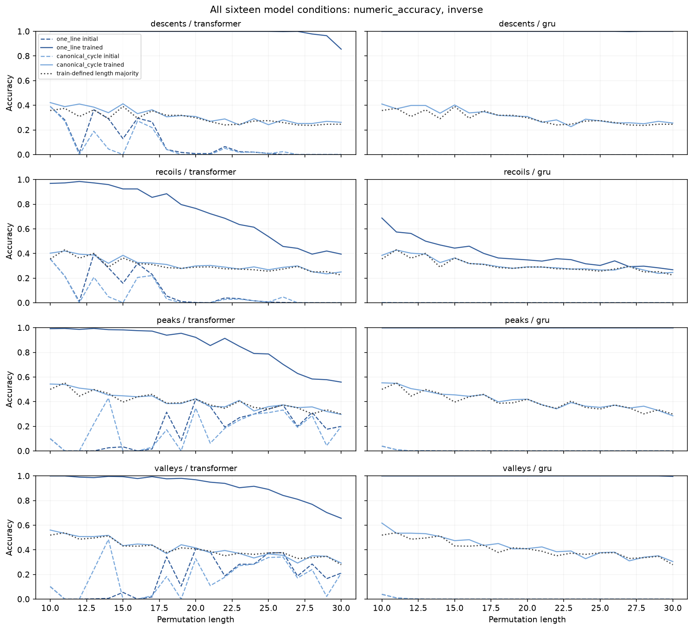
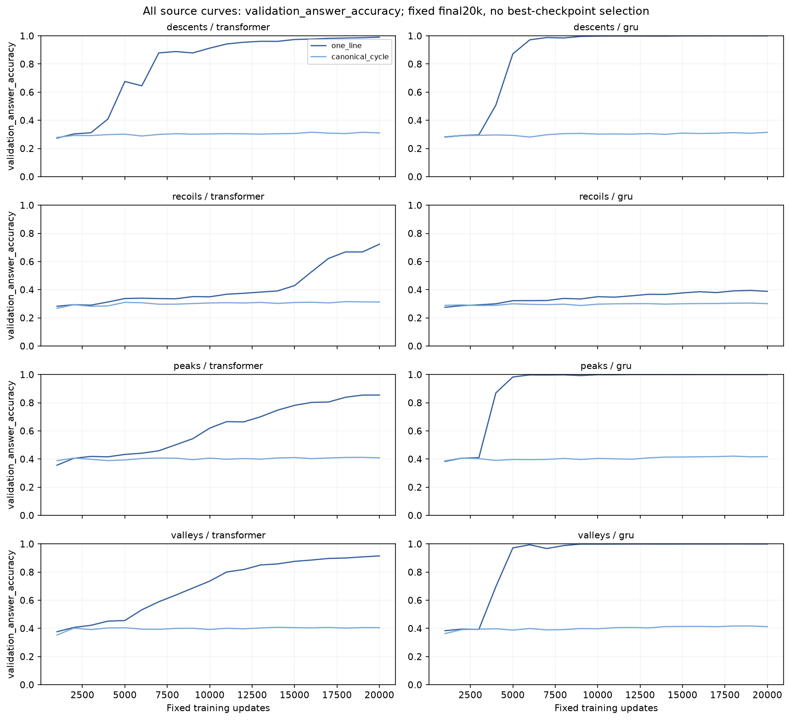
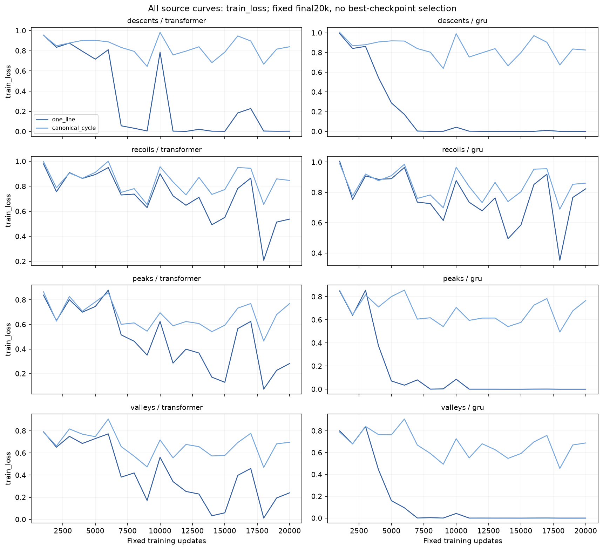
All per-length data, static-answer baselines, protocols, frozen hashes, repair records, and learning curves are exported. Large data, activations, and weights remain on drive F; this script reads no model weights, trains nothing, and does not recompute frozen scientific metrics.
Development results cannot replace formal multi-unit verification or identify mathematical-encoding mechanisms from geometric similarity alone. Stop after the engineering report; no automatic seeds, systems, or training scale increases.